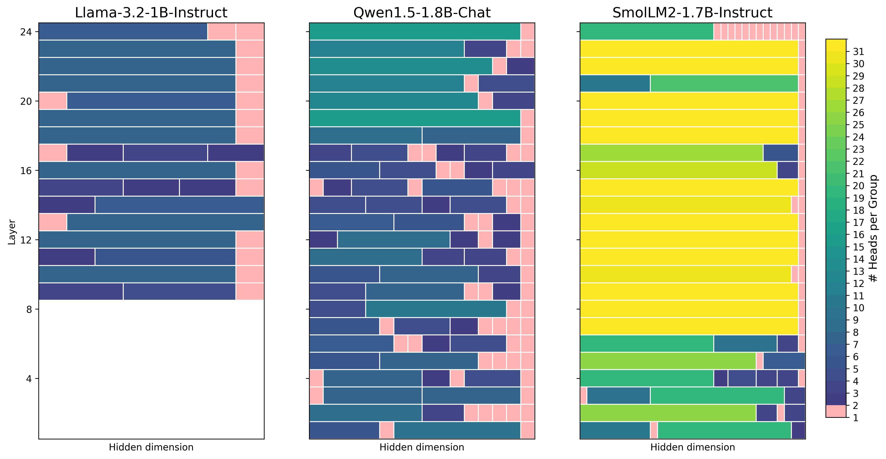

Why it matters왜 중요한가
Low-rank KV compression has quietly converged on a shared recipe — split heads into groups, factor each group with SVD, spend the rank budget evenly — and almost nobody has asked whether the grouping itself should be a hyperparameter.
저랭크 KV 압축은 어느새 하나의 공통 레시피로 수렴했다. 헤드를 그룹으로 나누고, 각 그룹을 SVD로 분해하고, 랭크 예산을 균등하게 쓴다. 그런데 그룹 나누기 자체가 하이퍼파라미터여야 하는지 묻는 사람은 거의 없었다.
The premise behind grouped Key compression is that some attention heads encode nearly the same thing, so they can share one low-rank basis. But "group size = 4" is an assertion about how redundancy is distributed, and it is almost certainly wrong: redundancy is not uniform across layers, and it is not uniform across architectures. This paper takes the obvious next step — measure head similarity with CKA, run agglomerative clustering on it, and let the number and size of groups fall out of the data. Figure 1 below is the payoff of that move, and it is more informative than any accuracy table in the paper: the three models produce completely different grouping structures, and those structures predict how much compression each model can absorb. Qwen1.5 (head dim 128) refuses to merge — 59 singleton groups — while SmolLM2 (head dim 64, 32 heads) collapses whole layers into a single 32-head group. Same algorithm, same budget, radically different outcome.
그룹 단위 Key 압축의 전제는, 어떤 어텐션 헤드들은 거의 같은 것을 인코딩하므로 하나의 저랭크 기저를 공유해도 된다는 것이다. 그런데 "그룹 크기 = 4"는 중복이 어떻게 분포하는지에 대한 주장이고, 거의 확실히 틀렸다. 중복은 층마다 균일하지 않고, 아키텍처마다도 균일하지 않다. 이 논문은 당연한 다음 수순을 밟는다. CKA로 헤드 유사도를 재고, 그 위에 병합적 클러스터링을 돌리고, 그룹의 개수와 크기가 데이터에서 나오게 둔다. 아래 그림 1이 그 대가이고, 논문의 어떤 정확도 표보다 정보량이 많다. 모델 셋이 완전히 다른 그룹 구조를 만들어내고, 그 구조가 각 모델이 얼마나 압축을 견딜 수 있는지를 예측한다. Qwen1.5(head dim 128)는 병합을 거부해 싱글턴 그룹이 59개인 반면, SmolLM2(head dim 64, 헤드 32개)는 한 층 전체를 32-헤드 단일 그룹으로 뭉갠다. 같은 알고리즘, 같은 예산, 전혀 다른 결과다.

By the numbers핵심 숫자
The result that actually splits the paper in two논문을 둘로 가르는 결과
| Model / Method | TriviaQA | Qasper | TREC | SAMSum | LCC | RepoBench-P | QMSum | MultiNews | Avg Δ |
|---|---|---|---|---|---|---|---|---|---|
| Llama-3.2-1B (GQA) · ReCalKV | 56.40 | 15.10 | 33.00 | 24.84 | 22.24 | 27.86 | 17.33 | 19.19 | — |
| Llama-3.2-1B (GQA) · DynaCalKV | 37.44 | 6.00 | 20.50 | 14.34 | 21.67 | 24.85 | 15.15 | 11.79 | −8.03 |
| Qwen1.5-1.8B (MHA) · ReCalKV | 68.37 | 17.20 | 42.00 | 33.01 | 28.59 | 30.44 | 17.04 | 23.68 | — |
| Qwen1.5-1.8B (MHA) · DynaCalKV | 67.52 | 15.35 | 38.00 | 33.72 | 27.15 | 29.62 | 17.26 | 23.53 | −1.02 |
In one diagram한 장의 그림
The two moving parts움직이는 두 부품
CKA clustering + energy-proportional rank
The Key projection W(k) ∈ ℝm×n is split column-wise into K submatrices, one per head cluster. Two independent decisions used to be frozen — how many heads per group, and how much rank per group — and this paper unfreezes both. Grouping comes from agglomerative clustering on the CKA matrix; rank comes from each group's share of the total squared-singular-value energy. The constraint that keeps it honest is Σ riαi ≤ 4r/h, which is literally ReCalKV's parameter count written as a ceiling, so any win is a win at equal-or-lower memory. A greedy loop enforces it by repeatedly killing the rank whose normalized energy cost ΔEi/αi is smallest — note this preferentially cuts large groups, since αi sits in the denominator.
Key 사영 W(k) ∈ ℝm×n을 헤드 클러스터 단위로 열 방향 K개 부분행렬로 자른다. 지금까지 얼어붙어 있던 두 결정 — 그룹당 헤드 수, 그룹당 랭크 — 을 이 논문이 둘 다 녹인다. 그룹은 CKA 행렬 위의 병합적 클러스터링에서 나오고, 랭크는 각 그룹이 차지하는 특이값 제곱합 에너지 비율에서 나온다. 정직성을 지켜주는 제약이 Σ riαi ≤ 4r/h인데, 이건 말 그대로 ReCalKV의 파라미터 수를 천장으로 적어놓은 것이라, 이기면 메모리가 같거나 더 적은 상태에서 이긴 것이 된다. 탐욕 루프가 정규화 에너지 비용 ΔEi/αi가 가장 작은 랭크를 반복해서 죽여 이 제약을 강제한다 — αi가 분모에 있으므로 큰 그룹이 우선적으로 깎인다는 점에 주목할 것.
Untouched: ReCalKV's offline calibration
The Value cache gets no new idea at all — it is ReCalKV's procedure verbatim. W(v) is factored by plain SVD with no grouping, then the two factors are refined against WikiText-2 activations by alternating closed-form least squares: Lv = W(v)XXᵀRvᵀ(RvXXᵀRvᵀ)−1, then Rv = (LvᵀLv)−1LvᵀW(v). The justification is that the Fisher-information allocation step already told them the Value projection matters more, so it should be reconstructed faithfully rather than clustered. This is a defensible choice, but it also means the paper's entire contribution lives on the Key side, and every number in it is a Key-side number.
Value 캐시에는 새 아이디어가 전혀 없다. ReCalKV의 절차 그대로다. W(v)는 그룹화 없이 평범한 SVD로 분해하고, 두 인자를 WikiText-2 활성값에 대해 교대 폐형해 최소제곱으로 정련한다: Lv = W(v)XXᵀRvᵀ(RvXXᵀRvᵀ)−1, 이어서 Rv = (LvᵀLv)−1LvᵀW(v). 근거는 Fisher 정보 기반 배분 단계가 이미 Value 사영이 더 중요하다고 알려줬으니, 클러스터링하지 말고 충실히 복원해야 한다는 것이다. 방어 가능한 선택이지만, 동시에 이 논문의 기여 전체가 Key 쪽에만 살아 있고 논문의 모든 숫자가 Key 쪽 숫자라는 뜻이기도 하다.
How it works어떻게 작동하나
- Spread the budget across layers first. 먼저 층 사이로 예산을 뿌린다. Following Palu, layer-wise Fisher information is computed on WikiText-2 and used to hand each layer its rank budget r. This step is inherited, not new, and it is also where the paper learns that Value projections carry more Fisher information than Key projections — the fact that later justifies leaving Value alone.Palu를 따라 WikiText-2에서 층별 Fisher 정보를 계산해 각 층에 랭크 예산 r을 배정한다. 물려받은 단계이지 새 단계가 아니며, 동시에 Value 사영이 Key 사영보다 Fisher 정보를 더 많이 담는다는 사실을 이 지점에서 알게 된다 — 나중에 Value를 건드리지 않는 근거가 되는 사실이다.
- Build the CKA similarity matrix and cluster. CKA 유사도 행렬을 만들고 클러스터링한다. Linear CKA between head representations fills S ∈ ℝh×h; agglomerative clustering turns it into K groups of variable size hi. Unlike ReCalKV there is no head reordering into equal blocks and no group-size hyperparameter to tune.헤드 표현 사이의 선형 CKA가 S ∈ ℝh×h를 채우고, 병합적 클러스터링이 이를 크기 hi가 제각각인 K개 그룹으로 바꾼다. ReCalKV와 달리 헤드를 같은 크기 블록으로 재배열하는 과정도, 조율할 그룹 크기 하이퍼파라미터도 없다.
- Give each group rank in proportion to its energy, then take some back. 각 그룹에 에너지 비례로 랭크를 주고, 다시 일부를 회수한다. ri starts at round(r · Ei/E). That initialization generally violates Σ riαi ≤ 4r/h, so ranks are shed one at a time from whichever group has the smallest ΔEi/αi until the budget is satisfied. Σ ri ends up below r, and that gap is the reported saving.ri는 round(r · Ei/E)로 시작한다. 이 초기화는 대개 Σ riαi ≤ 4r/h를 위반하므로, ΔEi/αi가 가장 작은 그룹에서 랭크를 하나씩 떼어내 예산을 만족시킨다. 결국 Σ ri는 r보다 작아지고, 그 차이가 보고된 절감분이다.
- Sweep the number of clusters and keep the winner. 클러스터 개수를 훑고 승자를 남긴다. For each candidate K the pipeline is run end to end and scored by Σ‖Wi − LiRi‖F2 + λ(r − Σ ri) with λ = 1 — reconstruction error plus a penalty for wasted rank. The argmin K* and its factors are what ships. All of this is offline, so inference-time cost matches ReCalKV exactly.후보 K마다 파이프라인을 끝까지 돌리고 Σ‖Wi − LiRi‖F2 + λ(r − Σ ri), λ = 1로 점수를 매긴다 — 복원 오차에 낭비된 랭크 페널티를 더한 것이다. argmin K*와 그 인자들이 실제로 배포된다. 전 과정이 오프라인이므로 추론 시점 비용은 ReCalKV와 정확히 같다.
What to take away그래서, 가져갈 것
Head-group size deserves to be data-driven, and the cost of making it so is zero at inference. If you are running any grouped low-rank KV method, swapping a fixed group size for CKA clustering is a cheap experiment with a clear theoretical guardrail — the Σ riαi ≤ 4r/h constraint means you cannot accidentally spend more memory than the fixed-group baseline.
헤드 그룹 크기는 데이터가 정하게 할 가치가 있고, 그렇게 만드는 비용은 추론 시점에 0이다. 그룹 단위 저랭크 KV 방법을 쓰고 있다면 고정 그룹 크기를 CKA 클러스터링으로 바꿔보는 건 값싼 실험이고, 이론적 안전장치도 명확하다 — Σ riαi ≤ 4r/h 제약 때문에 고정 그룹 베이스라인보다 메모리를 더 쓰는 사고는 날 수 없다.
The real finding is that GQA has already spent the redundancy budget. Grouped Key compression and grouped-query attention are the same trick applied at different times; stacking them on a model with 8 Key heads costs −8.03 LongBench average, concentrated in retrieval (−18.96 TriviaQA, −12.50 TREC). Any head-merging compressor should be reported separately for MHA and GQA, and this paper is a clean demonstration of why.
진짜 발견은 GQA가 이미 중복 예산을 다 써버렸다는 것이다. 그룹 단위 Key 압축과 grouped-query attention은 같은 트릭을 다른 시점에 적용한 것이고, Key 헤드가 8개인 모델에 둘을 겹쳐 쌓으면 LongBench 평균 −8.03을 치르며 그 손실이 retrieval에 몰린다(TriviaQA −18.96, TREC −12.50). 헤드를 병합하는 압축기라면 MHA와 GQA를 나눠서 보고해야 하고, 이 논문이 그 이유를 깔끔하게 보여준다.
Head dimension predicts mergeability better than head count. Qwen1.5's dh = 128 heads are too individually expressive to cluster (59 singletons, only 16.00% saved), while the dh = 64 models merge freely. If you want to know in advance whether a compressor of this family will help you, plot the CKA matrix first — it costs one forward pass over calibration data and tells you more than running the whole pipeline.
헤드 차원이 헤드 개수보다 병합 가능성을 더 잘 예측한다. Qwen1.5의 dh = 128 헤드들은 개별적으로 너무 표현력이 커서 클러스터링되지 않고(싱글턴 59개, 절감 16.00%), dh = 64 모델들은 자유롭게 병합된다. 이 계열의 압축기가 내 모델에 도움이 될지 미리 알고 싶다면 CKA 행렬부터 그려보라. 캘리브레이션 데이터로 순전파 한 번이면 되고, 파이프라인 전체를 돌리는 것보다 많은 걸 알려준다.